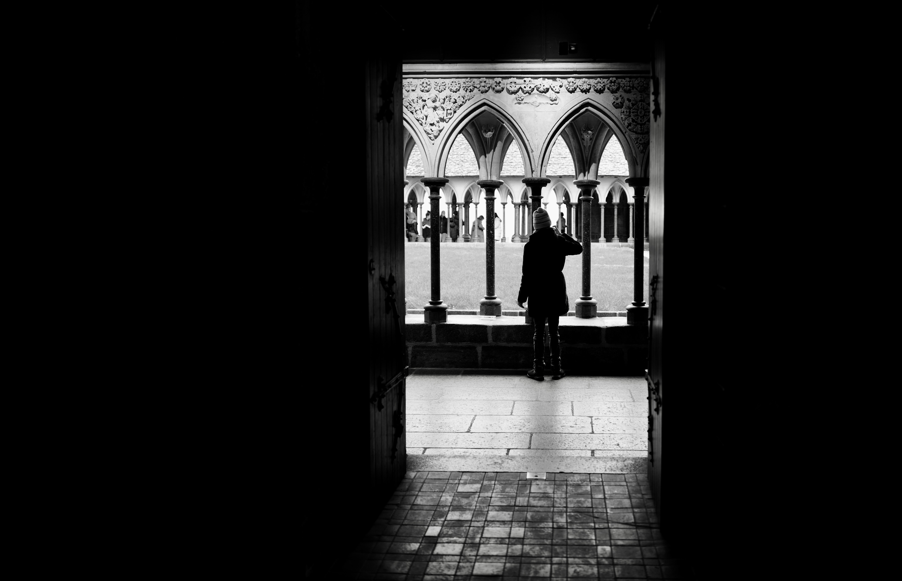

장미셸 바스키아는 미국에서 태어난 화가다. 아버지가 아이티계, 어머니가 푸에르토리코계이다. 그는 1970년대 뉴욕에서 그래피티 그룹 SAMO의 일원으로 처음 이름을 날렸다.

바스키아의 천재성을 단번에 알아본 워홀은 바스키아를 자신의 스튜디오인 '팩토리'에 자유롭게 드나들게 하고 지원을 아끼지 않았다. 또한 워홀은 자신의 재력과 타고난 마케팅 실력을 바탕으로 '화가 바스키아'의 몸값을 끌어올렸고 바스키아는 그런 워홀 덕분에 '유명한 화가'라는 목표에 점점 가까워졌다. 그러나 성공이 반드시 행복을 보장하지 않았는데 전에 없던 독창적인 작품 세계로 뉴욕 미술계를 휩쓸었던 바스키아는 어느덧 자신도 감당할 수 없을 정도로 성공한 사람이 되어있었고 그 유명세로 힘든 시간을 보내게 되었다.
'바스키아는 워홀에게 이용당했다.', '워홀과 바스키아는 동성연애 중이다.'같은 여러 소문들과 갈등이 바스키아를 괴롭혔고 결국 바스키아는 워홀과의 공동 전시 실패를 계기로 교류를 하지 않게 되었다. 그러나 1987년 충격적인 소식을 듣게 되는데 바로 워홀의 사망 소식이었다. 이 소식은 바스키아에게 큰 상실감과 심각한 마약 중독을 초래했는데 결국 바스키아는 헤로인 중독으로 27살 젊은 나이에 생을 마감하게 된다.